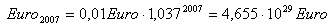

Wer über Politik nachdenkt, muss überschüßige Zeit haben. So beginnt meine Ausführung mit folgeder Frage:
Als erstes muß man das Erdvolumen in Kubikdezimeter ausrechnen:

Danach berechnet man den Preis für einen Kubikdezimeter Gold:
Aus beiden Ergebissen errechnet man den Preis des Erdvolumens aus Gold:
Das ist aber eine große Menge Geld, die man da braucht. Man kann die Summe auch ausschreiben:
226.680.695.112.185.619.835.519.239.520,43 Euro.
Zum Vergleich die Schulden der Bundesrepublik:
1.565.389.581.240,00 Euro
Nehmen wir an Joseph hätte bei Christus Geburt einen Cent (Soweit es den gegeben hätte) zu 3,7% angelegt. Dann wäre das Geld folgendermassen angewachsen:
Die Zahl ausgeschrieben:
465.547.579.309.432.430.792.864.266.967,78 Euro.
Das ist mehr Geld als man für eine Welt aus Gold braucht. Es ist ein exponentielles Wachstum. Alle 20 Jahre verdoppelt sich das Geld. Dieses exponentielle Wachstum ist in folgendem Applet dargestellt:
Ich halte unser Wirtschaftssystem mit dem Wachstumsglauben für ein instabiles System. In der Vergangenheit gab es öfters Zeiten großer Inflation oder einer Währungsreform. So wie das Kapital wächst auch die Verschuldung. Mit neuen Schulden werden die Schuldenzinsen bezahlt. Jede Zentralbank versucht ihre Währung stabil zu halten und hält den Zinssatz hoch. Diese Gewinne müßen auf dem realen Wirtschaftsseite erwirtschaftet werden. Um die Gewinne kurzfristig zu erhöhen, werden Produktionsanlagen ins billigere Ausland verlagert.
Die Anleger wissen nicht wohin mit ihren Gewinnen. Da müssen selbst Wasserwerke, Krankenhäuser usw. privatisiert werden. Der Staat verkauft sein "Tafelsilber" und verschuldet sich über die verfassungsrechtlichen Grenzen. Wohin soll die Verschuldung führen? Zu einer grossen Inflation?
Dieses exponentielle Wachstum des Kapitals und der Wirtschaft wird an die natürlichen Grenzen stoßen. Durch den Wirtschaftswachstum in China werden die Rohstoffe knapp. Das Klima ändert sich durch den CO2 Ausstoß.
Angebot und Nachfrage steuern den Preis. Die Waren die billiger hergestellt werden, werden öfters gekauft. Jedoch verdienen die Leute, die diese Waren billiger herstellen weniger Geld. Wer soll dann die Waren kaufen?
| In einem Wirtschaftsregelkreis sollen Wirtschaftszyklen modelliert werden. |
Die neoliberale Politik hat die Logik für mehr Beschäftigung die Löhne zu senken. Das geschieht in den Tarifrunden. Der Staat will durch Senkung der Lohnnebenkosten die Beschäftigung erhöhen. Wenn in jedem Staat die Löhne gesenkt werden, wer soll dann die Waren kaufen?
Allerdings kann in keinem Land die Löhne gesteigert werden, ohne das die Wettbewerbsfähigkeit reduziert wird. Das ist die Zwickmühle. Ein Hochlohnland hat das Problem, das die Investitionen in Billiglohnländer fliessen. Das Geld wird aus dem Wirtschaftskreislauf herausgenommen. Da braucht man sich nicht wundern, das die Binnennachfrage gering ist.
| In dem Wirtschaftskreislauf sind verschiedene Einflüsse einstellbar. |
Ist es richtig, alles dem Gesetz von Angebot und Nachfrage zu überlassen? Alles auf eine Regelung, die niemand entworfen hat, sondern die einfach so entstanden ist. Sollte nicht auch etwas steuernd eingegriffen werden?
Der Staat spart bei den Ärmsten. Bei den Hartz 4 Empfängern. Ich demonstriere bei der Montagsdemo gegen diese Einsparungen. Wieso wird die Arbeit nicht gerecht verteilt? Die Produktivität wird durch Rationalisierung und Automatisierung ständig erhöht. Warum wird der Reichtum nicht gerecht verteilt?
Reden: